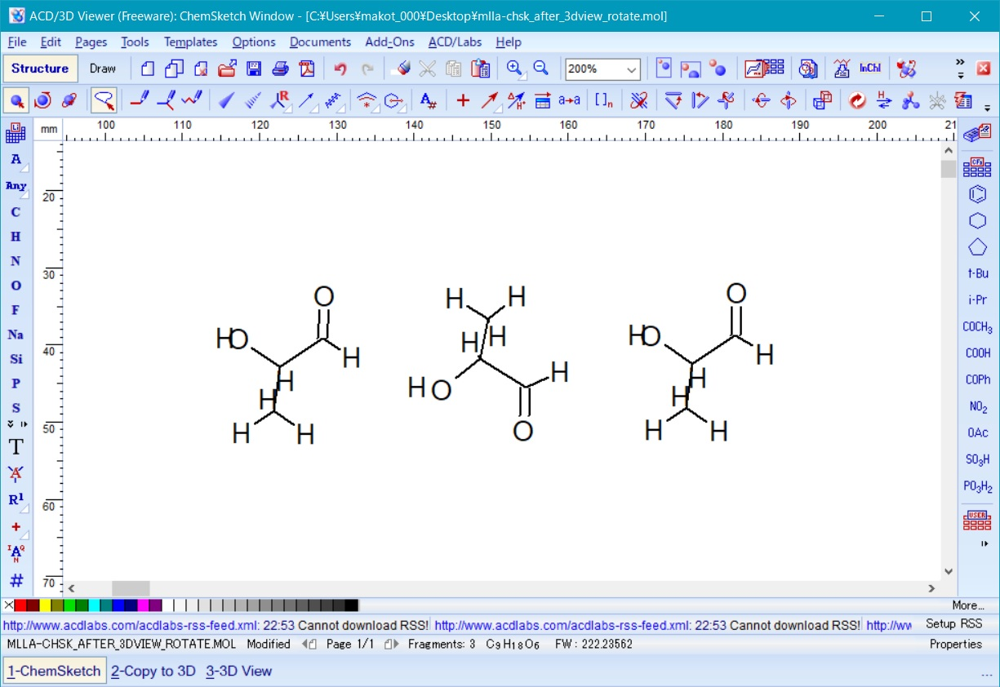

フリーな分子動力学計算プログラムの一つである GROMACS と連携ソフトウエアを用いて、 ポリ乳酸（図１）を例にして合成高分子（非生体高分子）の三量体モデリングから任意多量体のMD計算を WindowsPC（Windows 10 64bit) を用いて行う方法を説明する。
Fig. 1 Poly L-lactic acid
GROMACSの主なターゲットであるタンパク等の生体高分子では、すでに登録済のアミノ酸残基を基本構造として目的とする生体高分子をモデリングするが、 合成高分子の場合は、自分でそのモノマーを新しく「残基」として作成して登録する必要がある。
また、MD計算に必要な力場も、合成高分子の場合は general AMBER力場(GAFF)等のより一般的な力場の適用が必要となるため、 GAFFをGROMACSのモノマー（残基）モデリングで用いるための方法も説明する。
Windows Subsystem for Linux (WSL)
Windows 10 64bit でubuntu等のLINUXを利用可能とするMicrosof提供の環境。
下記でLAMMPS等の実行の環境として使用する。
WSLのインストール法についてはネット上に多くの情報があるので、 例えばここ等を参照してインストールする。WSLインストール後に、WSLを起動して後に必要となるプログラムを追加しておく。
まず、左下隅のWindowsアイコン - アプリリストから ubuntu ***（あるいは Bash on Ubuntu on Windows）を選択して WSL のコンソールを起動し、 下記コマンドを入力する。sudo apt install libgfortran3
上記コマンド実行時に、WSLのインストール時に入力したユーザーパスワード入力を求められるので入力する。
下記内容は、WSL の ubuntu 18.04LTSで検証しているが、ubuntu 別バージョンの場合には他にも追加インストールが必要な場合がある。
Gromacs
次に、分子動力学シミュレーションプログラムGromacsのバイナリを、 上記のWSLへのプログラム追加と同様に、WSLコンソールに下記のコマンドを入力してインストールする。
sudo apt install gromacs
インストール終了後に、下記コマンドを入力して、
which gmx
/usr/bin/gmx
と表示されればGromacsのインストールが確認できる。
antechamber, mol22rtp.pl他次に、 general AMBER 力場を使うための支援プログラム antechamber 、 SYBYL-mol2ファイルを残基トポロジーファイルに変換するスクリプトmol22rtp.pl等をダウンロード・インストールする。
更新情報
antechamber を AmberTools20 ベースの物に変更。上記と同様に、WSLコンソールで下記のコマンドを入力して上記をインストールするスクリプトファイルをダウンロードする。
wget --no-check-certificate http://staff.aist.go.jp/makoto-yoneya/MDonWINPC/install_WSLgmx.sh
次にダウンロードしたこのスクリプトファイルをWSLコンソールから次の様に入力して実行する。
sh install_WSLgmx.sh
以上でWSLコンソールでのインストール作業は終了なので、WSLコンソールで、"exit"と入力してWSLを終了させる。
ChemSketch Freeware
Windows 向けの分子構造描画ソフトChemSketchのフリー版で、MDL-mol ファイル形式の分子構造ファイルを作成するために用いる。 上記の形式のファイルがアウトプットとして得られるソフトであれば ChemOffice: ChemDraw＋Chem3D 等何を使って作成しても良いが、注意点として、作成する分子構造ファイルは水素原子を含んだ三次元座標データである必要がある。
ChemSketch Freeware は、Advanced Chemistry Development, Inc のホームページからダウンロード可能である（ユーザー登録が必要）。
ダウンロードしたインストーラーファイルをダブルクリックして、後は表示に従えば、一般のwindowsアプリケーションと同様にインストールできる。VMD (Visual Molecular Dynamics)
MD計算のスナップショットや、アニメーションの表示に用いる分子表示ソフト。
VMD は、ホームページから Windows 版をダウンロード可能である。
ダウンロードしたインストーラーファイルをダブルクリックして、後は表示に従えば、一般のwindowsアプリケーションと同様にインストールできる。以上で、演習環境が整うはずである。
Gromacsをアンインストールしたい場合には、WSLコンソールで下記コマンドを入力する。sudo apt remove gromacs
1. ポリマーモデリング
1.1 三量体分子構造ファイルの作成
最初のステップとして、対象とする高分子（上述の様にここではポリ乳酸を例に説明）のモノマー分子構造ファイルを、 ChemSketch Freeware 等（ChemOffice の場合は後述）を用いて作成し、それを基に三量体を作成する。
三量体を作るのは、GROMACS では、 AMBER タイプの力場の場合、両末端を末端残基として定義する必要があるため 、 三量体が両末端を含む最小の単位となるためである。
ChemSketch Freewareを用いた化学構造の描画は直感的に可能である。原子のインデックス番号は、基本的に作画した順に振られていくので、 図２のように端から番号をつけたければ作画の順番を意識するとよい。
Fig. 2 Drawing polylactic acid monomar with ChemSketch
原子の番号の表示は、 Edit メニューから Select All で分子全体を選択し、次に Tools メニューから Structure Property を選択して表示される小ウインドウの Atom メニューの N(Numbering) をクリックし、右に表示される Show チェックボックスを ON にして Apply すると可能である。
図１のような水素原子を省略した構造を作成した後、 ACD/Labs メニューから 3D Viewer を起動し、左下に表示されるリストから ChemSketch を選択して一度 ChemSketch に戻り作成した分子構造を表示させる。 次に左下のリストに表示される copy to3D Viewer を選択すると、 ChemSketch で作成した分子構造が 3D Viewer に表示される。 次に、 Tools メニューから 3Doptimization を実行する。 これにより、図３の様に、省略されていた水素原子が付加され、同時に分子構造を三次元化することができる。
Fig. 3 polylactic acid monomar after 3D optimization in 3Dview
ここで、次に左下のリストの copy to ChemSketch を選択し、3D Viewer でoptimizeした分子構造を ChemSketch に上書きすると、図４の様な水素が付加されたモデルがChemSketch上で得られる。
Fig. 4 polylactic acid monomar after 3D optimization in ChemSketch
ここで、この構造を一度保存するため、ChemSketchのFile メニューから export で、ファイルの種類として MDL molfiles [V2000] を選択し、適当なファイル名 (mlla.mol等) をつけて下記のフォルダに保存する。
C:\Users\ユーザー名（あるいは C:\ユーザー\ユーザー名）
保存終了後、左下のリストに表示される 3D View を選択して3D viewer に戻り、3D viewer 上で図5のように上下180度回転させる。
これは、図１にある様に、ポリ乳酸の隣り合うモノマーが互いに180度回転していることから必要となる。
Fig. 5 polylactic acid monomar after 3D optimization in 3Dview
ここで、再度左下のリストの copy to ChemSketch を選択し、3D Viewer で回転した分子構造を ChemSketch に上書きし、図６の回転したモノマーをChemSketch上で得る。
Fig. 6 polylactic acid monomar after rotation in ChemSketch
次に、ChemSketch のfile メニューからImport を選択し、先ほど保存しておいた回転前のモノマーの構造ファイルmlla.mol を上記回転済モノマーの両脇にインポートして図７の様に３つ並べる。

Fig. 7 three polylactic acid monomars
次に、ChemSketchの編集機能を使って、モノマー間を両端の水素を削除してC-O間を結合し、図８の様に三量体を作成する。
Fig. 8 polylactic acid trimer just connected
次に、以前のモノマーの時と同様に左下のリストの copy to3D Viewer を選択し、ChemSketch で作成した三量体を 3D Viewer に表示させ、 Tools メニューから 3Doptimization を実行する。 これにより、図８のラフに作成した三量体をより妥当な三次元構造にした後に、左下のリストの copy to ChemSketch を選択し、3D Viewer でoptimizeした分子構造を ChemSketch に上書きすると、図９の様な三量体モデルがChemSketch上で得られる。
ここで、後に必要となるため、作成した三量体モデル主鎖の左端および右端の水素原子のインデックス（図９の例では左端が７、右端が29）を確認して記録しておく。 これらの両端の原子は、3D viewer でモノマーを3次元化した際に両端に追加された水素原子に対応している。
Fig. 9 polylactic acid trimer in ChemSketch
次に、ChemSketchのFile メニューから export で、ファイルの種類として MDL molfiles [V2000] を選択し、適当なファイル名 (3lla.mol等) をつけて下記のフォルダに保存する。
C:\Users\ユーザー名（あるいは C:\ユーザー\ユーザー名）
この MDL-mol ファイル中には、分子を構成する原子の原子種と座標が保存され、また原子間結合についても単結合、二重、三重結合の属性付きで保存されており、これらの情報は、次のステップでの AmberMini による力場パラメータの自動割り当てに活用される。
ChemOffice の場合は、ChemSchetchの代わりにChemDrawで分子構造を２次元的に作成した後、ChemDrawの上段メニューからView - Show Chem3D HotLink Windowを実行することにより、省略されていた水素原子が付加され、三次元化された分子構造がサブウインドウに表示される。
次にこのサブウインドウ左下隅のアイコン（Launch Chem3D）をクリックして、Chem3Dを立ち上げ、その上段メニューからFile - Save Copy Asで表示されるサブウインドウで、上記のChemSketch+3D Viewerと同様にファイルの種類として MDL molfiles （V3000でない方） を選択し、適当なファイル名 (3lla.mol等) をつけて上記のフォルダ保存する。重要な点として、まずモノマーを作成し、それを３次元化してから、コピー・ペーストして結合することにより三量体を作成することで、最初から三量体を作成すると以下の手順が上手く機能しない。
1.2 モノマートポロジーファイルの生成
次のステップは、上記で作成した三量体の分子構造（mol2）ファイルからの MD 計算に必要な残基トポロジーファイルの作成である。
Gromacs, AMBER等のMD計算プログラムは、元々タンパク質等の生体高分子の計算向けにつくられており、タンパク質の構成単位である残基がすでに残基トポロジーファイルとして登録されている。 合成高分子を計算するには、そのモノマーを残基として新たに定義し、残基トポロジーファイルを作成する必要があり、以下その手順を説明する。まず、前節で ChemSketchで作成したMDL-molファイルをプログラム antechamber を使ってsybyl-mol2ファイルに変換する。
antechamber は、Windows Subsystem for Linux (WSL)のコマンドプロンプト画面で実行する。
WSLコマンドプロンプトは、左下隅のウインドウズアイコンをクリックして表示されるプログラムメニューから、"ubuntu *** (あるいは Bash on Ubuntu on Windows）" を選択すると表示される。
上記のWSLコマンドプロンプトを開いた直後は、通常は/home/WSLインストール時に指定したユーザー名
というディレクトリ（フォルダ）になっている（コマンドプロンプ表示後半で確認できる）ので、 前節でChemSketch等で作成したMDL-mol ファイル（3lla.molとする）のあるフォルダに次のコマンドを入力して移動する。
cd /mnt/c/Users/自分のWindowsユーザー名
Public フォルダにMDL-molファイルを作成した場合は、下記で移動する。
cd /mnt/c/Users/Public
移動できたかは、コマンドプロンプ表示後半で確認でき、コマンド"ls -l"を入力すると、前節でChemSketch等で作成したMDL-mol ファイル（3lla.molとする）が表示されるはずである。
antechamber は、具体的には、"WSLコマンドプロンプト"で次のように入力する。
antechamber -fi mdl -i 3lla.mol -fo mol2 -o 3lla.mol2 -at gaff -c gas -rn LLA
"-at gaff"で、使用する原子タイプとしてgeneral AMBER力場(GAFF)の原子タイプを割り振ることと、 "-c gas" で Gastiger 法による原子点電荷を割り振ることを指定している。
また、最後の"-rn LLA"で、残基名（3文字）を"LLA"と名付けている。general AMBER力場では点電荷として、 Gaussian 等を用いた非経験的分子軌道計算による RESP(Restrained Electro Static Potential) 電荷が標準となっている。
Gaussianが利用できる環境にあれば、それを用いて上記の RESP 電荷を算出して用いる方が望ましい。
付録A にその方法を説明しておく。次に、上記で作成した mol2ファイルを、残基トポロジー(rtp)ファイル形式に mol22rtp.pl で変換するため、同様に"WSLコマンドプロンプト"で次のように入力する、
mol22rtp.pl < 3lla.mol2 > 3lla.rtp
上記で出力された rtp ファイルは、単純に mol2 ファイルからatomおよびbond情報を抜き出しただけのファイルで、 最終的に pdb2gmx コマンドで必要となる rtp ファイルには、下記の rtp2tmer.pl で変換する必要がある。
具体的には、"WSLコマンドプロンプト"で次のように入力する。rtp2tmer.pl --n_term_id 7 --c_term_id 29 < 3lla.rtp > lla.rtp
ここで、"--n_term_id 8 --c_term_id 41"で入力している数値、8, 41 は、pdb2tmer.plと同じく作成した三量体モデル（図７）の左端および右端の原子のインデックスである。
上記コマンド入力は、省略形として下記も可能である。rtp2tmer.pl -n 7 -c 29 < 3lla.rtp > lla.rtp
これらの数値（この例では、7, 29）を省略すると、ディフォルト値としてそれぞれ、１とモデル分子中の最後の原子インデックス（図７の例では29）がセットされるため、 上記の例では、"--c_term_id 29"あるいは"-c 29"は省略可能である。
正しい数値が入力されないと、rtp2tmer.pl は誤った出力を出すので十分注意が必要である。次に、この最終的な rtp ファイルから、ポリマー両末端に付加する水素の情報に関する hdb ファイルを rtp2hdb.pl コマンドにより作成するため、 同様に"WSLコマンドプロンプト"で次のように入力する、
rtp2hdb.pl < lla.rtp > lla.hdb
以上で、ポリ乳酸のモノマーに対応した残基が定義出来た。
1.3 多量体構造ファイルの作成
次に、前章で作成した三量体の分子構造ファイルを基に、任意多量体の分子構造ファイルを作成する。
まず、前章で作成した三量体の mol ファイルを pdb ファイル形式に下記のコマンド入力で変換する。antechamber -fi mdl -i 3lla.mol -fo pdb -o 3lla.pdb -rn LLA
上記で出力された pdb ファイルは、単純に mol から pdb にフォーマット変換しただけのファイルで、 明示的に三量体の pdb ファイルには、下記の pdb2tmer.pl で変換する必要がある。
具体的には、"WSLコマンドプロンプト"で次のように入力する。pdb2tmer.pl --n_term_id 7 --c_term_id 29 < 3lla.pdb > 3lla_4pdb2gmx.pdb
ここで、オプション"--n_term_id 8 --c_term_id 41"で入力している数値、8, 41 は、前章で説明した rtp2tmer.pl と同じく、 作成した三量体モデル（図７）の左端および右端の原子のインデックスである。
rtp2tmer.pl と同様に、上記コマンド入力は、省略形として下記も可能である。pdb2tmer.pl -n 7 -c 29 < 3lla.pdb > 3lla_4pdb2gmx.pdb
正しい数値が入力されないと、pdb2tmer.pl は誤った出力を出すので十分注意が必要である。
次に、このポリ乳酸三量体の分子構造ファイルから、主鎖方向の並進対称コピーにより任意の多量体の分子構造ファイルを作成する。
そのために、まず上記の三量体から並進対称単位となる二量体の構造ファイルを作成する。そのための下準備として、まず、下記 make_ndx コマンドでインデックスファイルを作成する。
gmx make_ndx -f 3lla_4pdb2gmx.pdb
上記コマンドを入力すると、プロンプト ">" で入力待ち状態となるので、
a 1
続いて、
a 1 13
続いて、
r 1 2
と入力する。
これらはそれぞれ、インデックス１の原子のグループ(a_1)、インデックス１と１３の原子のグループ（a_1_13）と、１および2番目の残基からなるグループ(r_1_2)を新たに定義している。
最後にq
と入力して終了する。
以上で index.ndx（ディフォールト名）というインデックスファイルが作成できた。次にこのインデックスファイルを使って、 まず三量体の主鎖方向がX軸方向となる様に下記コマンドにて座標変換する。
gmx editconf -f 3lla_4pdb2gmx.pdb -o 3lla_4pdb2gmx-princ.pdb -n index.ndx -princ
上記コマンドを入力すると、
Select a group for determining the system size:
で主軸とするグループの選択肢が表示されるので、
最初の二量体の主鎖に対応したインデックス１と１３の原子に対応したa_1_13
グループに対応した数字を入力する。
次に、
Select a group for determining the orientation:
で方位を決めるためのグループの選択肢が表示されるので、同じa_1_13
グループに対応した数字を入力する。
最後に、
Select a group for output:
で、出力するグループの選択肢が表示されるので、システム全体に対応した
System
グループの数字を入力する。
次に、この三量体分子の末端水素を除いた主鎖で一番左端の原子（図10の場合原子インデックス１の酸素原子）１を座標原点にシフトする。
具体的には下記コマンド入力を行う。gmx editconf -f 3lla_4pdb2gmx-princ.pdb -o 3lla_4pdb2gmx-orig.pdb -n index.ndx -center 0 0 0
上記コマンド入力すると、
Select a group for determining the system size:
で座標原点とするグループの選択肢が表示されるので、
インデックス１の原子に対応したa_1
グループに対応した数字を入力する。
次に、
Select a group for output:
で、出力するグループの選択肢が表示されるので、システム全体に対応した
System
グループの数字を入力する。
上記で作成した構造ファイル 3lla_4pdb2gmx-orig.pdb の中身は、コマンド
less 3lla_4pdb2gmx-orig.pdb
により表示することができる。
その中身は、
TITLE Gravel Rubs Often Many Awfully Cauterized Sores MODEL 1 ATOM 1 O1 LLAn 1 0.000 0.000 0.000 1.00 0.00 O ATOM 2 C1 LLAn 1 0.984 -0.173 0.751 1.00 0.00 C ATOM 3 C2 LLAn 1 0.724 -1.168 1.614 1.00 0.00 C ATOM 4 C3 LLAn 1 2.043 -0.489 0.016 1.00 0.00 C ATOM 5 O2 LLAn 1 1.899 -1.013 -0.898 1.00 0.00 O ATOM 6 H1 LLAn 1 1.161 0.651 1.250 1.00 0.00 H ATOM 7 H3 LLAn 1 0.574 -2.004 1.133 1.00 0.00 H ATOM 8 H4 LLAn 1 1.487 -1.270 2.215 1.00 0.00 H ATOM 9 H5 LLAn 1 -0.075 -0.964 2.139 1.00 0.00 H ATOM 10 O1 LLA 2 3.155 -0.173 0.348 1.00 0.00 O ATOM 11 C1 LLA 2 4.034 -0.171 -0.543 1.00 0.00 C ATOM 12 C2 LLA 2 3.799 0.836 -1.402 1.00 0.00 C ATOM 13 C3 LLA 2 5.236 0.000 0.000 1.00 0.00 C ATOM 14 O2 LLA 2 5.348 0.157 1.047 1.00 0.00 O ATOM 15 H1 LLA 2 4.007 -1.026 -1.019 1.00 0.00 H ATOM 16 H3 LLA 2 3.903 1.693 -0.946 1.00 0.00 H ATOM 17 H4 LLA 2 4.442 0.780 -2.134 1.00 0.00 H ATOM 18 H5 LLA 2 2.891 0.779 -1.758 1.00 0.00 H ATOM 19 O1 LLAc 3 6.194 -0.035 -0.721 1.00 0.00 O ATOM 20 C1 LLAc 3 7.253 0.610 -0.552 1.00 0.00 C ATOM 21 C2 LLAc 3 7.985 0.041 0.422 1.00 0.00 C ATOM 22 C3 LLAc 3 7.947 0.609 -1.678 1.00 0.00 C ATOM 23 O2 LLAc 3 7.583 1.139 -2.523 1.00 0.00 O ATOM 24 H1 LLAc 3 7.033 1.530 -0.296 1.00 0.00 H ATOM 25 H3 LLAc 3 8.214 -0.875 0.178 1.00 0.00 H ATOM 26 H4 LLAc 3 8.806 0.559 0.536 1.00 0.00 H ATOM 27 H5 LLAc 3 7.488 0.027 1.263 1.00 0.00 H TER ENDMDLの様に、インデックス１の原子の x, y, z 座標値が 0.000 0.000 0.000 となっている筈である。
上記ファイルの ATOM エントリ行の5カラム目の数字が残基番号を表し、残基1-2が並進対称単位となる二量体に対応する。
今、主鎖をｘ軸方向としているので、残基3の最初の原子（上記の例ではインデックス19）のｘ座標値（この例では、6.194 単位はÅ）が 並進周期距離に対応していると考えられる。
次は、この値をつかって並進対称単位となる二量体の構造ファイルを作成する。
具体的には、下記コマンドを実行する。gmx editconf -f 3lla_4pdb2gmx-orig.pdb -o 2lla.pdb -n index.ndx -noc -box 0.6194 1 1
上記のコマンド入力すると、
Select a group for output:
で、出力するグループの選択肢が表示されるので、並進対称単位となる二量体に対応する残基1-2に対応したr_1_2
グループの数字を入力する。
これにより、入力の三量体構造から二量体だけを抜き出し出力する。
上記で、オプション "-box 0.6194 1 1" は、x, y, z 方向の長さ 0.6194nm (=6.194 Å）, 1nm, 1nm のbox情報を追加することを指定しており、
このx方向のbox長さを上記の並進周期距離に対応させる（y, z方向の長さは適当な値で良い）。
オプション "-noc" はこのbox指定に伴う再座標センタリングを抑制するためのオプションである。以上で並進対称単位となる二量体の構造ファイル（2lla.pdb）が出来たので、任意の多量体の作成が下記コマンドで可能となる。
gmx genconf -f 2lla.pdb -o 60lla.pdb -nbox 30 1 1
上記の例では、二量体を、"-nbox 30 1 1" でｘ方向に 30 box 分並進コピーすることにより 60量体の構造ファイル（60lla.pdb）を作成している。
上記で作成された 60lla.pdb 等のpdb フォーマット座標ファイルの分子配置は、プログラムvmdにより図10 のように可視化できる。
Fig. 10 Viewing 60lla.pdb file with VMD
具体的には"コマンドプロンプト"で、
vmd.exe 60lla.pdb
とコマンド入力する。
分子の回転等の操作は、ウインドウ内でマウスボタンを押しながらマウスを動かすことにより可能である。
終了は file メニューから exit を選択する。上記で得られた60量体の構造ファイルは、末端残基が正しく設定されていないので、 下記のコマンドで最初と最後の残基を末端残基に設定した構造ファイル（60lla_4pdb2gmx.pdb）を作成する。
cn-term.pl < 60lla.pdb > 60lla_4pdb2gmx.pdb
2. GROMACS 用 GAFF パラメータファイルの作成
次のステップは、上記で作成した多量体の分子構造(pdb)ファイルとモノマー（残基）トポロジーファイルから、GROMACSのコマンド pdb2gmx を用いたシステムトポロジーファイルの作成である。
冒頭で述べた様に、本稿では合成高分子のMD計算に、general AMBER力場（GAFF）を用いる。
しかし、上記のプログラム pdb2gmx に対応したフォーマットの GAFF のパラメーターファイルが用意されていないので、 前準備としてまずこれをフォーマット変換により以下で作成する。今までの各種ファイル作成は、
/mnt/c/Users/ユーザー名
ディレクトリ（あるいはフォルダ）に出来ているはずである。
このディレクトリ（フォルダ）に新たに gaff.ff という名前のディレクトリ（フォルダ）を下記コマンドで作成する。mkdir gaff.ff
次に、下記コマンドでこの gaff.ff ディレクトリに移動する。
cd gaff.ff
ちゃんとディレクトリ移動ができたかは、コマンド入力
pwd
で、
gaff.ff
と表示されれば確認できる。
pdb2gmx に対応した GAFF パラメータファイルは、この gaff.ff ディレクトリで、下記コマンドを入力して、 AMBERフォーマットの GAFF パラメータファイル gaff.dat から変換、作成する。
ambdat2gmx.pl < $AMBERHOME/dat/leap/parm/gaff.dat
上記により、この gaff.ff ディレクトリ（フォルダ）に、下記ファイル
atomtypes.atp
ffbonded.itp
ffnonbonded.itp
forcefield.doc
forcefield.itp
が作成される筈で、コマンドls -l
で、上記のファイルが表示されることで確認できる。
前節までで作成した、モノマー（残基）トポロジーファイル（lla.rtp）および、水素データーベースファイル（lla.hdb）も、この gaff.ff ディレクトリ（フォルダ）に置く必要があるため、そのリンクを下記コマンドで作成する。
ln -s ../lla.rtp ../lla.hdb .
リンクができたかどうかは、上記と同様
ls -l
で、rtp および hdb ファイルが表示されれば確認できる。
3. トポロジーファイルの作成
以上で前準備ができたので、いよいよ、上記で作成した多量体の分子構造(pdb)ファイルとモノマー（残基）トポロジーファイルから、GROMACSのコマンド pdb2gmx を用いてシステムレベルのトポロジーファイルを作成する。
まず、上記までの作業をしていた gaff.ff ディレクトリから、コマンド、
cd ..
で、元の
/mnt/c/Users/ユーザー名
ディレクトリ（フォルダ）に移動する。
ここで、下記コマンドを実行する。
gmx pdb2gmx -f 60lla_4pdb2gmx.pdb -o 60lla.gro -ff gaff -water none
オプション"-f 60lla_4pdb2gmx.pdb"は入力構造ファイル、
オプション"-o 60lla.gro"は出力構造ファイルで、 入力構造ファイル60lla_4pdb2gmx.pdb に末端水素を付加し、GROMACS の標準の座標ファイル形式 (*.gro形式) にフォーマット変換したものである。
オプション"-ff gaff"は上記でgaff.ffに作成し たGAFFパラメータを使うことを指定している。
オプション"-water none"は、溶媒としてよく使われる水分子のモデル情報をトポロジーファイルに追加しないことを指定している。上記によりトポロジーファイル topol.top (ディフォールト名）が作成される。
このトポロジーファイルの中身を簡単に説明すると、 [ moleculetype ]エントリにあるOther がこの分子モデルの名前で、Other はpdb2gmx が ディフォールトで付けた名前なので、適切な名前に変更した方が良い。
その次の[ atoms ]エントリには、ポリアミド4の60量体モデルの原子番号毎の原子タイプ、点電荷、質量等の情報が、全原子について記述されている。
その後には、[ bonds ], [pairs ], [ angles ], [ dihedrals ]のそれぞれのエントリ毎にそれぞれこの 60量体モデルに含まれている、結合、 1-4 分子内相互作用ペア、結合角、二面角を構成する原子インデックスがリストアップされている。
topol.topの後半最後の部分は、系全体の情報を記述しており、主要部分を示すと、
[ system ] ; Name Protein [ molecules ] ; Compound #mols Other 1上記の最後の行の数字は、系に含まれている分子タイプ毎の分子数（1 はディフォールト値）に対応しており、 この数は計算する系中の分子数に合わせて変更する必要がある。
自動生成されたtopol.top そのままでもMD計算が可能な場合もあるが、ターゲットとする分子構造によっては、標準のGAFFパラメータには無いパラメータが必要となる場合がある。
この不足パラメーターのチエックは、Amber Tools 中の paramchk2 プログラムによって可能である。具体的には、下記コマンドを実行する。
parmchk2 -f mol2 -i 3lla.mol2 -o 3lla.frcmod
上記により、指定出力ファイル 3lla.frcmod に不足のパラメーターと、妥当なパラメーター候補値が出力される。
妥当なパラメーター候補値が記入されていない場合には、何らかの方法で自分でパラメータ値を設定する必要がある。
frcmod ファイルに不足のパラメーター自身が無い場合は、下記の手順は不要で、pdb2gmx で作成されたトポロジーファイルtopol.top をそのまま使えばよい。
frcmod ファイルに不足パラメーターがある場合にはそれを取り込む必要がある。 この frcmod ファイルは、AMBER のフォーマットなので、上述の gaff.dat と同様にGROMACSで使えるフォーマットに次のコマンドで変換する。frcmod2gmx.pl < 3lla.frcmod
上記により、下記ファイル
frcmod_atomtypes.atp
frcmod_ffbonded.itp
frcmod_ffnonbonded.itp
が生成されるが、ファイルを見てみないと不足パラメーターの有無は判らない。ファイルの中身は、less コマンド、
less frcmod_ffnonbonded.itp
によって閲覧可能である。
不足パラメーターがある場合は、その itp ファイルを トポロジーファイル topol.top ファイルに、"メモ帳"等のプログラムで追記する必要がある。
具体的な追記方法を、topol.top ファイルの当該部分で示すと、; ; File 'topol.top' was generated ; By user: unknown (1000) 中略 ; Force field was read from current directory or a relative path - path added. ; ; Include forcefield parameters #include "./gaff.ff/forcefield.itp" #include "./frcmod_ffbonded.itp" [ moleculetype ] ; Name nrexcl Other 3上記で、赤字部分が追加部分である。
トポロジーファイル topol.top を編集するには、まず次のコマンドでファイル名を topol.txt に変更する。
mv topol.top topol.txt
上記、topol.txt をWindows のフォルダ上でダブルクリックして普通のテキストファイルとして開き、上記の行を追加して上書き保存する。
最後に、このtopol.txt に、下記コマンドで、元のディフォールトのトポロジーファイル名 topol.top の別名をつけておく。
ln -s topol.txt topol.top
4. 多量体のシミュレーション
2.2 エネルギー最小化計算
トポロジーファイルと初期構造ファイルが揃えば、原理的にはこの時点でも MD 計算を始めることが可能である。 しかし、上記のようにして人為的に用意した初期構造は非現実的に近接した分子を含む可能性が高い。 このような状態から MD 計算を始めると、上記の近接分子に起因した高いエネルギーが運動エネルギーに変換され、 MD 計算における時間積分が不安定となる。 したがって、このような非現実的な近接を取り除く目的で、まずエネルギー最小化を行うのが一般的である。
エネルギー最小化計算を行うには、まず
の３つの入力ファイルをプリプロセッサプログラムgromppにより１つのバイナリトポロジファイル（拡張子.tpr）に変換する。
- 初期構造ファイル（ディフォールトの拡張子.gro）
- MD 計算パラメータファイル（拡張子.mdp ディフォールトのファイル名はgrompp.mdp）
- トポロジーファイル（拡張子.top ディフォールトのファイル名はtopol.top）
MD計算パラメータファイルは、ここではエネルギー最小化計算として最低限のものを、下記のコマンド入力によりファイル名 em.mdp として作成する。
echo integrator=steep > em.mdp
echo nsteps=100 >> em.mdp
echo pbc=no >> em.mdp
echo cutoff-scheme=group >> em.mdp60量体1分子の計算をする場合は、上記で作成したトポロジーふぁいるtopol.top がそのまま使える（分子数を１から変更する場合は、トポロジーファイルの最後の行を系中の分子数に対応した数字に変更する必要がある。）。
これらのファイルを用い、上記のバイナリトポロジファイルへの変換を行うコマンドラインは例えば以下のようになる（ファイル名の拡張子.gro, .tpr等は省略可能）。
gmx grompp -c 60lla.gro -o 60lla_em1.tpr -f em.mdp
上記によりバイナリトポロジファイルが生成される。 以上で、エネルギー最小化計算の準備が出来た。 実際にエネルギー最小化計算を行うプログラムはmdrun(後述の MD 計算と同じ) で、具体的なコマンドラインは例えば次のようになる。
gmx mdrun -deffnm 60lla_em1 -v
上記コマンドラインの -deffnm オプションは，ディフォールトのファイル接頭名を指定する物で，これにより、
等が暗黙の内に用いられる。
- 60lla_em1.tpr : バイナリトポロジファイル
- 60lla_em1.gro : 出力座標ファイル
実際に計算に用いられた計算パラメータは、省略されたもののディフォールト値も含め、ファイルmdout.mdpに出力されるのでチエックすると良い。 上記コマンドラインの最後の-vオプションを付けることにより、エネルギーがより低い状態に落ちていく過程がメッセージ出力され、これにより（あるいは出力される*.logファイルを開いて確認することにより）必要に応じて複数回に分けてエネルギー最小化を行う。
上記のエネルギー最小化後の出力座標ファイル60lla_em1.gro も以下の様にVMDで可視化可能である。
vmd.exe 60lla_em1.gro
2.3 スタートアップ MD 計算
上記のようにしてエネルギー最小化された構造を得たので、いよいよ MD 計算を行う。 エネルギー最小化された構造には原子の速度の情報が無いので、適当な温度を設定し、それに対応したボルツマン分布での原子速度生成を設定（下記のgen_vel = yes) し、スタートアップ MD をまず行う。
MD 計算パラメータファイルは例えば以下のように設定する。integrator = md dt = 0.00025 nsteps = 4000 pbc = no cutoff-scheme = group tcoupl = v-rescale tc-grps = SYSTEM tau_t = 0.002 ref_t = 200.0 gen_vel = yes gen_temp = 200.0上記の内容を、su.txt 等のファイル名でテキストファイルとして”メモ帳”等のエディタで作成・保存し、その後、下記コマンドでファイルに別名 su.mdp を付けておく。
ln -s su.txt su.mdp
トポロジーファイル(topol.top)に変更は無くそのままで良い。
エネルギー最小化の時と同様に、３種類のファイルを統合してバイナリトポロジーファイルを作る。初期座標ファイルとしては、上記で作成したエネルギー最小化された構造を用いる。
gmx grompp -c 60lla_em1 -o 60lla_su1 -f su
上記では、拡張子.gro, .tpr, .mdpが省略されている。得られたバイナリトポロジーファイルを用いてスタートアップ MD を行う。
gmx mdrun -deffnm 60lla_su1 -v
上記の例では、初期温度は 200K に設定され、時間刻み 0.00025ps(0.25fs) で 4000 ステップ (トータル 1 ps) 計算している。
2.4 継続 MD 計算
スタートアップMD計算以降は、上記の MD 計算パラメータファイル中の、gen_vel = yes 行を削除（デイフォールトは gen_vel = no）して、 出力座標ファイル中に原子座標と共に保存された速度データを用いて計算を継続する。 MD 計算パラメータファイルは例えば以下のようになる。
integrator = md dt = 0.0005 nsteps = 20000 nstxtcout = 10 pbc = no cutoff-scheme = group tcoupl = v-rescale tc-grps = SYSTEM tau_t = 0.03 ref_t = 300.0上記を、su.txt と同様にして、”メモ帳”等のエディタで、ファイル名 grompp.txt として作成し、grompp.mdp の別名を付けておく。 この例では、温度は 300.0K に設定され、時間刻み 0.0005ps(0.5fs) で20000 ステップ（トータル 10 ps）計算しているが、全体の計算の長さは計算の目的により数百 ps から百 ns 程度まで様々である。 この長さの計算は通常長時間かかるため、いくつかのジョブに分けて途中経過を見ながら実行する。 ディフォールトのファイル名grompp.mdp の別名を付けておくと、後述の様にgromppで計算パラメータファイルの指定 (-f grompp.mdp) を省略できる。
今までと同様に、バイナリトポロジーファイルを作成し、それを用いて MD 計算を行う。
gmx grompp -c 60lla_su1 -o 60lla_md1
gmx mdrun -deffnm 60lla_md1 >& efile &
計算時間が掛かるジョブは、上記の様に、コマンドラインの最後に"&" をつけてバックグラウンドジョブとして計算させると、 上記コマンド入力後すぐにプロンプトに戻るので、平行して他のコマンドが実行できる （前回まで画面に直接出力されていたメッセージは、efile と言うファイルに出力されている）。
上記の計算では、nstxtcout = 10 で指定した 10 ステップ毎に、ファイル 60lla_md1.xtc に計算途中の原子トラジェクトリを出力している。 このトラジェクトリ出力は、後で種々の解析に用いたり、可視化プログラムvmd等でアニメーションとして見る事ができる。
トラジェクトリファイル (60lla_md1.xtc等）をアニメーションとして見るには、同じ系の座標ファイル (60lla_md1.gro等）と一緒に、
vmd 60lla_md1.gro 60lla_md1.xtc
とコマンド入力すれば良い。
アニメーションの再生・停止等は、Mainウインドウ下部のそれぞれのボタンを押すことにより可能である。ここまでのまとめとして、全体の流れとプログラム、ファイルの関係を図11に示した。
Fig. 11 modelling and simulation flowchart
以上、最も単純な真空中の一本鎖の例を説明した。
4. おわりに
フリーに入手できるソフトウエアにより、手元の WindowsPC で MD 計算を実感して頂くことを念頭に、実践的な演習を試みた。 （注意本稿の内容や、関連するプログラムの実行の結果発生した PC 障害等に関しては一切保障できないので、くれぐれもオウンリスクにて実行願います）。
実践的な側面に重きを置くあまり、基礎理論や厳密さを欠いている (計算例での分子数 128 や計算条件等) のは大きな欠陥であるが、これらに関しては、教科書等により補って頂きたい。 これらの教科書には記載されていない、実際に計算を始める上で必要となる事柄を相補的に解説したつもりである。 時間の関係上、 GROMACS や antechamber 等のコマンド及びそのオプション等についても、詳しい説明ができなかったが、それぞれ脚注に示した URL に詳細なマニュアル (特にGROMACS のマニュアルは実践的な教科書としても優れたものである) があるので、必要に応じて御確認頂きたい。
付録 A: Gaussian を用いた RESP 電荷 Sybyl-mol2 ファイルの生成方法
まず、antechamberコマンドを用いて MDL-mol ファイルから Gaussian 計算インプットファイルを下記のコマンドにより作成する。
antechamber -fi mdl -i 3lla.mol -fo gcrt -o 3lla.com
これを用い、 Gaussian09 プログラム等を用いて例えば、
g09 3lla.com
等により非経験分子軌道計算を行い、その log ファイル3lla.logを用いて、 RESP 電荷を次のようにして計算し、それを格納した Sybyl-mol2 ファイルを得る。
antechamber -fi gout -i 3lla.log -fo mol2 -o 3lla.mol2 -at gaff -c resp
後はこのmol2ファイルを用いて、上記と同様に mol22rtp.pl を用いて残基トポロジーファイルを作成する。
2020年05月21日更新
makoto-yoneya@aist.go.jp